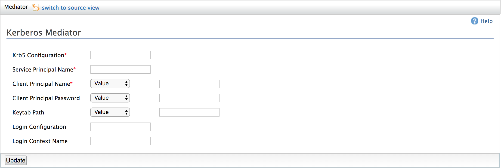

Kerberos Mediator
The Kerberos Mediator provides support to access the Kerberos secured REST backend services.

Kerberos Mediator Screenshot
You have the following configurations under the Kerberos Mediator.
-
Krb5 Configuration: Name of the kerberos configuration file[e.g.:krb5.conf]
-
Service Principal Name: SPN of the backend service.
-
Client Principal Name: Username of the client.
-
Client Principal Password : The password of the above client.
-
Keytab Path : The name of keytab file which has the password of the above client.
-
Login Configuration : The name of the JASS Configuration file[e.g.:login.conf]
-
Login Context Name : Name of the login context defined in the above login configuration file.